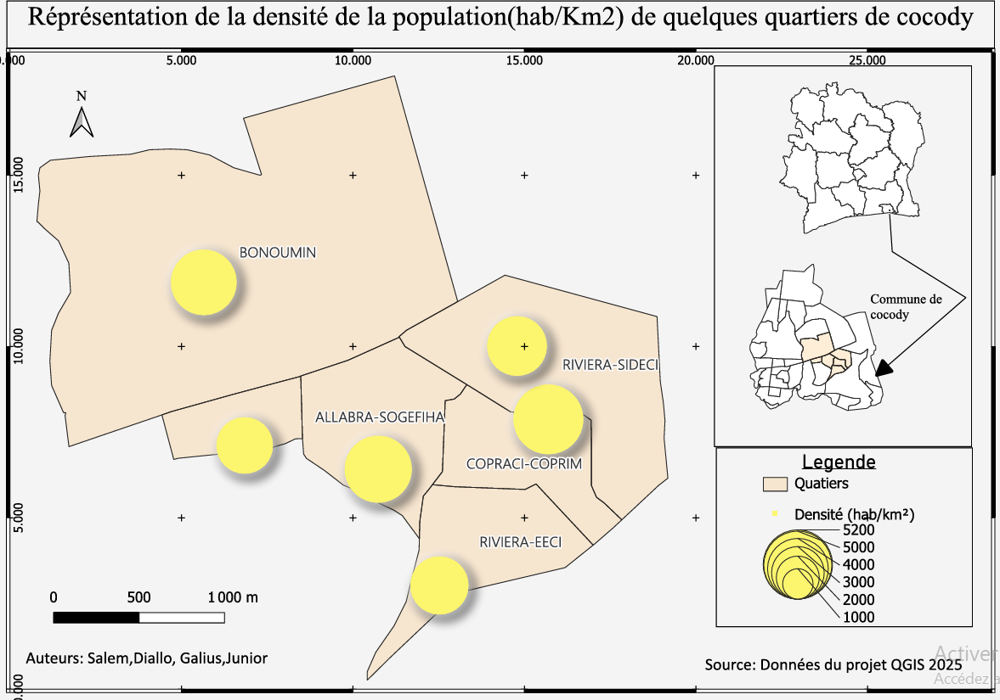
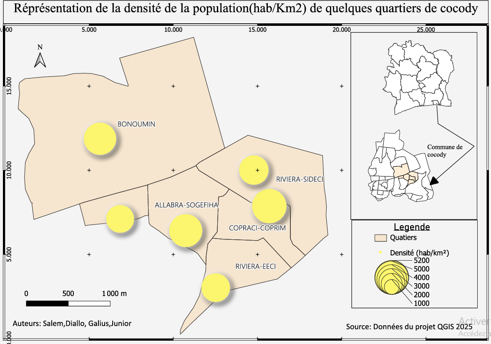

Dans le cadre de notre formation, plusieurs projets ont été réalisés pour consolider et perfectionner nos compétences techniques. Ils ont permis de mettre en pratique divers outils et technologies, renforçant ainsi notre capacité à concevoir des solutions adaptées aux besoins réels dans des domaines variés.
Développement d’une Plateforme avec python
Le projet consite à concevoir une application web qui permettre d'évaluer les performances des agents enquêteurs après une enquête. Cette plateforme permet de renseigner les indicateurs de performances pour chaque agent enquêteur. Cette plateforme a été conçu pour rendre aussi la gestion des personnes affiliés à l'organisation des enquêtes très fluide. Ce projet revise mes compétences en programmation avec python.
 

Analyse spatiale à l’aide de QGIS
Ce projet s’inscrit dans le cadre de l’apprentissage des Systèmes d’Information Géographique (SIG) et vise à mettre en pratique les compétences acquises sur le logiciel QGIS. Il porte sur la commune de Cocody, à Abidjan, et consiste à cartographier et analyser les disparités démographiques à partir de deux indicateurs essentiels : le taux de natalité et la densité de population.
Conception de tableau de bord RShiny, Powerbi et Exce
Ce projet a pour objectif de renforcer les compétences acquises en conception de tableaux de bord à l'aide de R Shiny, Power BI et Excel. En pratique, il s'agit de développer un tableau de bord agricole à partir d'une base de données spécifique, permettant ainsi de faire ressortir des indicateurs de performance pertinents.
Analyse multidimentionnelle des données avec R
Ce projet a pour objectif de développer et de perfectionner les connaissances acquises en analyse multidimensionnelle des données. En effet, en utilisant une base de données de satisfaction des clients d'un restaurant, il s'agit de déterminer et de construire un indicateur synthétique de satisfaction à l'aide de méthodes d'analyse multidimensionnelle telles que l'Analyse en Composantes Principales (ACP) et l'Analyse des Correspondances Multiples (ACM).
Développement d’une application de gestion de tâches automatisée avec VBA Excel
Ce projet a pour objectif de renforcer les compétences en automatisation bureautique à l’aide du langage VBA dans Excel.Il consiste à développer une application interactive de gestion de tâches, permettant d’ajouter, modifier ou supprimer des activités selon leur priorité et leur catégorie. Le projet intègre également la synchronisation avec Outlook et la génération automatique de présentations PowerPoint.Il met en valeur l’utilisation du VBA pour faciliter l’organisation et améliorer la productivité au quotidien.